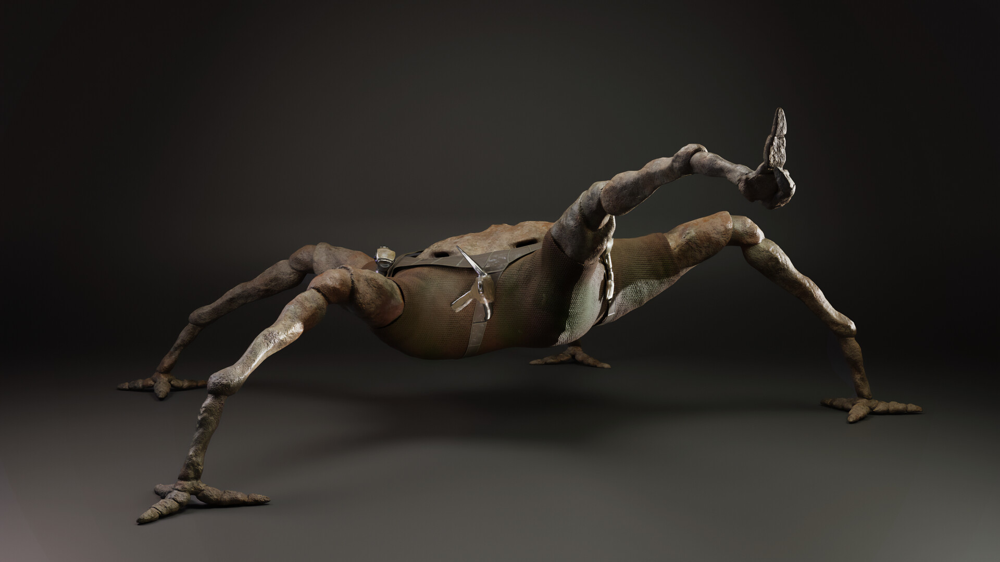
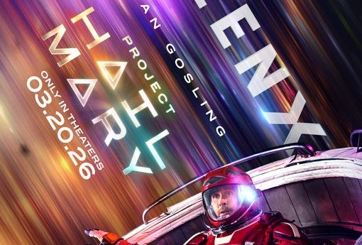
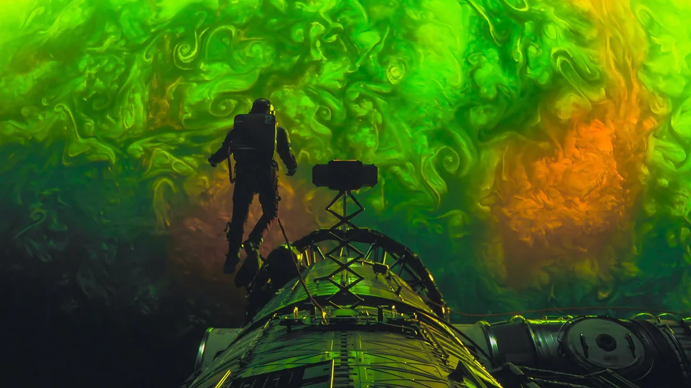
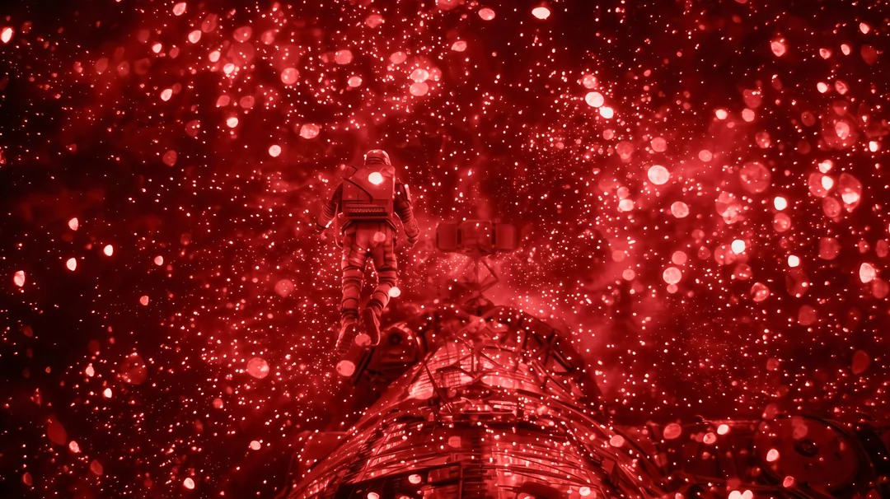
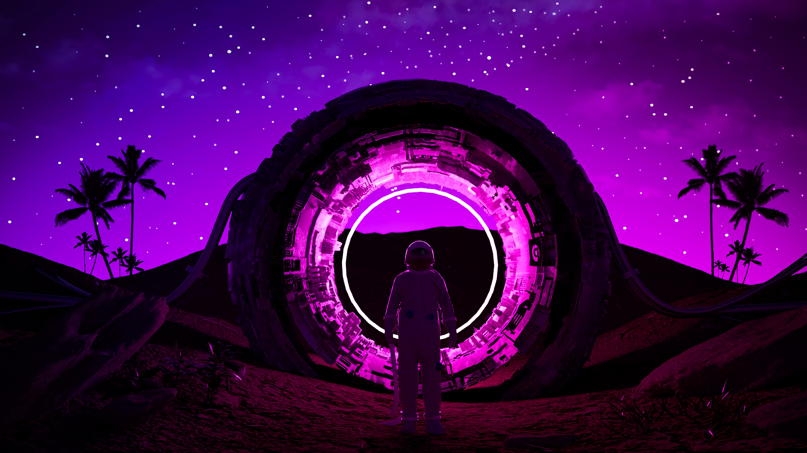

This mission is a mission regarding the petrova line. Which is an equator line passing from sun to venus.Where an element known as Astrophage is present
The famous scientist DR Petrova found a light ray passing from the sun to venus.His inventions was potrayed high the people have named the light ray after his invenntion as the prtrova light rays
The ASTROPHAGE is an element which has the capability to consume the energy of sun.It is mainly made of periodic elements like co2,o2 and water. it is present in the petroval line caused by petrova rays from sun to venus.The famous scientist DR Grace have found that the ASTROPHAGE is a black substance and its size is equivalent to a microorganisms present in amoeba.it synthesis its energy from the IR (INFRARED) and UV(ULTRAVIOLET) light rays. which in turnresults in eating the sun as the sun contains gases like co2 and rays like uv which made the sun to lose its brightness.This had given rise to the greatest mission of human race across the milkyway galaxy
In Project Hail Mary (film), the main NASA-affiliated research character is Dr. Ryland Grace (played by Ryan Gosling), a molecular biologist recruited for an emergency mission to save Earth. He acts as the protagonist and lead scientist whose discoveries make humanity’s interstellar trip to Tau Ceti possible.His involvement and research timeline includes:Discovering the Threat: After the Sun begins dimming due to a light-absorbing cosmic microbe dubbed "astrophage," the international Petrova Taskforce (headed by Eva Stratt) brings Grace onto the project.Amoeba Research: Grace researches the microbe and discovers that it breeds by absorbing and expelling electromagnetic radiation from the Sun, making it an extremely potent fuel source.Reluctant Astronaut: Because he understands the biology of the organism, he is ultimately sent as a surviving crew member on the Hail Mary spacecraft to the Tau Ceti system to find a way to stop the microbe and save both planets.

Rocky is a brilliant Eridian engineer who teams up with astronaut Ryland Grace to save their respective star systems. He is a faceless, rock-like, and five-legged alien who communicates via echolocation and musical chirps. He becomes Grace's loyal best friend.Bringing Rocky to life on screen was a massive technical feat, blending advanced puppetry and computer-generated imagery.

Dr. Ryland Grace is the main protagonist of Andy Weir’s hard science-fiction novel Project Hail Mary and its film adaptation starring Ryan Gosling. He is a brilliant but disgraced molecular biologist turned middle-school science teacher who accidentally becomes humanity's absolute last hope for survival.

Academic Exile: Grace left academia after writing a controversial paper arguing that water is not strictly necessary for life to evolve, making him a laughingstock among his peers. He retreated to the safety of teaching junior high school, preferring children over competitive scientists.The Crisis: When a microscopic alien organism named Astrophage begins consuming the sun's energy and threatening global extinction, task force leader Eva Stratt recruits Grace. Paradoxically, his rejected paper makes him the perfect mind to uncover the alien microbe's biology.The Accidental Astronaut: Grace was never supposed to leave Earth. However, after a lab explosion kills the primary science crew, Stratt forces an unwilling Grace onto the suicide mission to Tau Ceti. He is selected because he possesses a rare genetic marker allowing him to survive the long, medically-induced coma required for the journey.




AJAY PHNO/9876543210